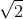
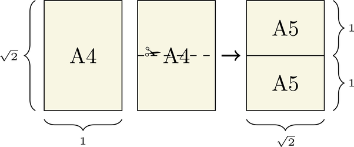
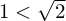
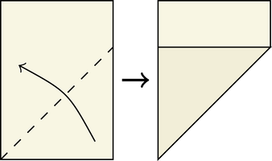
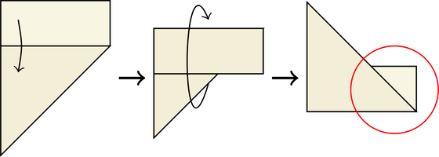
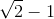
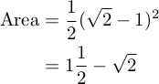
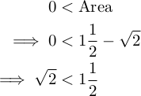
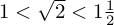

The A4 Paper Trick
This is a cute little mathematical trick I came up with in my 1st year of undergrad. By simply folding a sheet of A4 paper a certain way you can find an upper and lower bound for the square root of two.
The core of this trick depends on a special property of the A paper standard. The long side of an A-type sheet of paper is exactly  times the length of the short side. This is so when you cut it in half you get two smaller sheets with the same ratio as the original.
Already we have a good, albeit empirical, lower bound for :
Now for our upper bound. First, we fold the short side so it lies flush with the long side, making a crease that goes diagonally.
Then using the short edge as a guide, fold the leftovers and flip the whole thing over.
We're interested in the small isosceles right triangle formed by the leftover section, circled in red. The opposite and adjacent sides are both length  and since it is a right triangle we can calculate the area to be:
Since we know the triangle exists (citation: we can touch it) this must mean its area is greater than zero. Rearranging the inequality gives us our upper bound:
So all together we have an upper bound and lower bound for . Displayed all nice and together it's:
Obviously this isn't the "correct" way to compute , for that you'd use newton's method or a faster converging series. What's interesting is the bounds we got are the first two approximations newton's method gives with the initial guess of 1, though this is likely a coincidence. To me this suggests there are more complicated folds that yield smaller—but demonstrably positive area—triangles that you can use the greater than 0 trick on to obtain greater accuracy. Unfortunately I've had no luck in finding such folds. Email me if you think of a way!
Now you know a really cool party trick to show all your friends, assuming they like math. If they don't like math you can say you're building the worst paper airplane ever.